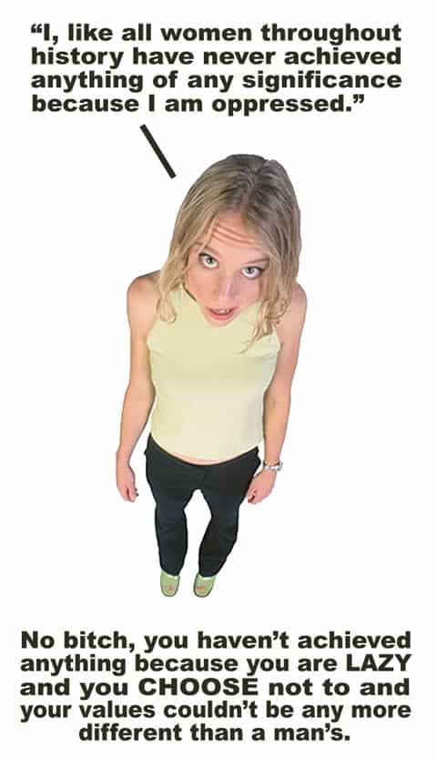
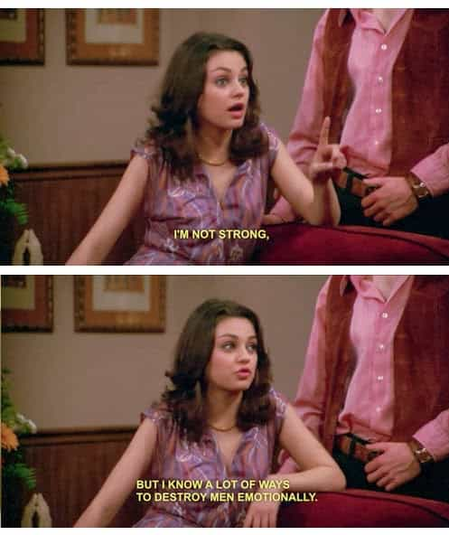
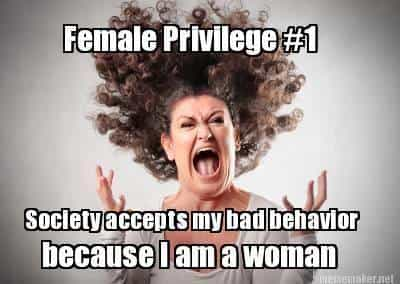
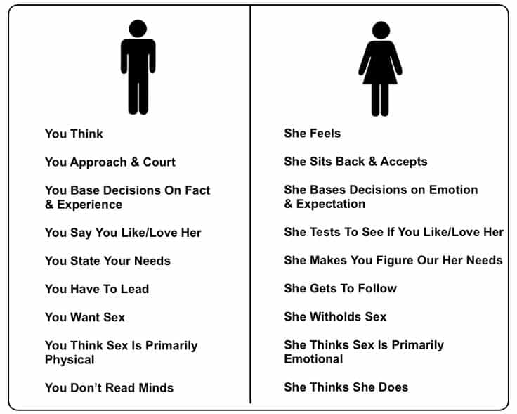

< < < Back
13 Common SJW “Arguments” And How to Dismantle Them – Return Of Kings
It is very clear based off of the past several months that many problems with contemporary society are being exposed, and that more and more men are willing to change. As a result, I predict that much of the conversation that we’re having on ROK will start to become common—first colloquially, then eventually in the news.
This was made evident by the Canadian media “coverage,” or rather spinning Roosh’s State of Man tour. Thankfully, however, we won. As more and more men start to join our underground community, discussion of the issues which modern men face will become more and more common.
Consequently, feminist opposition to said discussion will also grow.
This is why men must be prepared—we must have our shit down pat, because the feminists are damn sure going to use every single underhanded tactic and emotional appeal that they can. Thus, I have compiled a list of the 13 most common SJW arguments. Not only should you be able to clearly and concisely explain why these arguments are wrong (as shown below), but you must do so without growing overly emotional.
The second that you get too emotional, you’re entering into a territory that SJW’s have dominion over—and you best be sure that they will use this against you, either by faking victimhood when you grow angry and shout, or by eagerly using your rage to support their claims that you’re a cruel, bitter misogynist.
Disclaimer…
Now, before I delve into the arguments, I want to make something clear. You must be extremely careful with who you say these things to. Saying them to the wrong person may only incite violence or a false rape accusation. I recommend only responding to these SJW arguments when there is either a large group of men surrounding you who may be open to hearing the truth, or when you are discussing it with a single man (or level headed woman) who is open to hearing the truth.
Do not say these things to your coworkers–you’ll probably be fired, unless you work on an oil rig or something, in which case you can say whatever you want.
“I knew I shouldn’t have argued with my girlfriend about women’s rights!”
And whatever you do, don’t waste your time on hardened SJW’s–their beliefs likely stem from a very dysfunctional childhood, and no amount of reasoning will undo their daddy issues. Stick to people who you have a chance at converting. The truth is a very powerful thing, and you must be sure that whoever you’re telling it to won’t get you fired (unless your boss is a cool dude, or you’re self-employed).
That being said, don’t hesitate to spread the truth if the situation permits.
1. “Patriarchy oppresses women!”

Patriarchy frees women from having to work for a living—instead they can do what makes them happiest: develop relationships with men, and spend time raising children. Patriarchy ensures that women are respected for their feminine characteristics and maternal qualities as opposed to being seen as sexual objects.
Contrary to popular belief, it is feminism that encourages the rape and oppression of women. It removes the sexual morals which patriarchy upheld, thus encouraging women (through social pressure) to have as much sex as they want. After being raised around women who are sexually promiscuous, men come to view them as mere objects of pleasure.
In short, patriarchy ensures that women are protected by strong men, that they don’t compete against men for wages, that they can spend time doing what is fulfilling (raising children), and that they are respected for their personalities as opposed to being valued for their mere appearance.
2. “Women deserve equal pay!”
![344d92b3a9fc500f54e7fea7f807711c091ddb5f74e7c8a36d2eeb1c63645221[1]](wp-content/uploads/2016/04/344d92b3a9fc500f54e7fea7f807711c091ddb5f74e7c8a36d2eeb1c636452211.jpg)
Women have equal pay—they simply make less on average. This is because women tend to work less hours than men, choose less profitable careers than men, and accept less dangerous and demanding jobs than men. In addition to this, women also demand that men pay for them, a hypocrisy of the highest order. If you want to be treated as an equal in the workforce, then stop using your sexuality to manipulate your male coworkers and bosses, and stop expecting men to pay for you.
If you want men to pay for your things, and if you want to use your sexuality to manipulate men, then get the hell out of the work force and stop pushing your power hungry agenda under the guise of equality.
3. “My body, my rules!”
I care not what you do with your body, but I care how it affects others. You walking around with your muffin top hanging out of your shorts is offensive not only to my eyes, but also to families and children walking around in public. You wearing a t-shirt with offensive language on it is a bad influence on children, and quite frankly it’s very irresponsible.
In addition to this, just as you are entitled to do what you wish with your body (so long as it does not negatively affect others), I am free to do what I wish with my mind—if I find your body disgusting, I do not have to sleep with you. No, men do not like curves. If you want to be a fat pig, that’s fine, it’s your decision. But don’t get angry at men and try to guilt trip them because they don’t find a 300-pound ham beast sexually appealing.
4. “Men are violent!”
On average, men are more violent than women. However, women are equally at fault. When a man has an issue with something, he confronts it directly—his often results in physical violence. When a woman has an issue with something, she simply uses sly underhanded tactics to destroy someone’s reputation, get someone thrown in jail, or get a man to do the fighting for her. Both men and women cause problems in their own ways. The only difference is that women are sneakier.
In addition to this, the aggression often found in men is a good thing if harnessed properly. When men are allowed to confront one another over a dispute, it clears the air, and it allows them to express their feelings in a natural, albeit primal, way. If somebody called you a slut and spit in your face, would you expect your boyfriend to beat them up? The problem with modern society, is that everyone is completely feminized and scared shitless of violence, so something as simple as a fist fight is treated as if it is a murder.
Examples such as how “He got punched, then hit his head on the concrete and died!” are thrown around very often to support this, however the fact of the matter is that these examples are few and far between, and getting punched in the face (if you deserve it) is a very healthy way to learn to respect others, and a very concrete demonstration of how there are consequences to your actions.
5. “Women cooperate better!”

As said before, it only seems this way, because with men there is more direct conflict. Women only seem to cooperate better, because they never attack one another in the open. In reality, they let bitterness and grudges fester and never confront one another about it. They simply resort to petty passive aggressive tactics, emotional warfare, and manipulative techniques to harm their enemies.
At least with men, when there is a problem, they confront one another about it and it’s very clear who stands where. With women, you never know who stands where, and nothing ever gets done, because everyone is passive aggressively hindering one another.
6. “Immigration is a good thing!”
How? Is it good economically? Culturally? Legally? If you cannot provide proof aside from emotional appeals, then your opinion is of no validity. Economically, high immigration rates flood the labor pool, thus increasing supply of workers, thus lowering average wages. This works out to a lower average quality of living for everyone.
Culturally, immigration is horrible—introducing 30 different cultures into a nation causes a severe sense of disunity, and actually destroys cultures by watering them down and mixing them all together until they’re no longer distinguishable.
Legally, immigration is also horrible. The men and women that are sent here by other countries are not their best. It’s usually rapists, thieves, and general scum either trying to chase a fortune in America, or escape the legal ramifications they’ve experienced in their country.
7. “Women are the most victimized group on the planet!”

Quite the contrary, they’re the most privileged group on the planet. All throughout history, women have had everything provided for them: food, shelter, safety, and they never had to lift a finger to attain it. Men were off working hard to provide women with everything that they needed.
Men are drafted to fight and die for women, who sit idle at home playing with children. Men were expected to work 16-hour days in coal mines to feed their families, and to figure out a way to put food on the table, despite horrible job markets.
In addition to this, women now also have economic and political power, in addition to the sexual and emotional power that they have over men. As has clearly been shown, women are actually the most privileged group on the planet, and they always have been.
8. “You’re racist!”

Because I don’t want to allow numerous immigrants into my country? Because I admit that most of the violence in this country is due to immigrants living in ghettos?
If you disagree with my claims, this is fine—you have the right to do this, because men have died before us protecting this right. I do, however, expect you to postulate a logical explanation as to why you disagree. Simply calling me a name will not do because it’s the stuff of middle school arguments, and holds no evidential weight whatsoever.
9. “Rape is a real problem! We need to listen to the woman!”

Rape is in fact a real problem; this is why rapists should be in jail. We cannot, however, convict somebody with no evidence of their crime, especially when there are numerous social, emotional, and financial reasons to lie about being raped.
No, we should not simply “listen to the woman,” we need proof. Yes, women do in fact lie about rape very frequently. Why? Well, it’s simple—women are extremely judgmental towards sluts. If a girl feels as if she’s a slut for sleeping with a man, she would often rather accuse him of being a rapist than tarnish her social reputation.
In addition to this, women are clearly the most mentally ill demographic of the modern age. Those that are mentally ill often have victim complexes and suppressed anger, thus providing a serious emotional incentive to accuse someone of a false rape. If there is evidence of a rape, then the man who did the raping should be thrown in jail. If there is no evidence, however, it is not fair to potentially ruin an innocent man’s life.
10. “That’s so offensive, you can’t say that!”
So in other words what you’re saying is that your feelings take priority over the truth. That is an extremely solipsistic, narcissistic, and selfish way of interpreting reality, and you should be ashamed.
11. “White men have oppressed the world for centuries!”
Have we now? Do you see that phone in your pocket? This building that we’re standing in? The electricity that powers these lights? Do you see your car, and the gas which is used to power it? They were all invented by white men.
Yes, white men have done their fair share of conquering, raping, and enslaving – every single race has done this, however. We are no different than them. You focus in on the bad things that white men have done, and selectively ignore the good things they’ve done. White men built the western world. They invented the vast majority of things which make our lives easier. They built civilization.
12. “Men aren’t sluts, but women are. Double standard!”
This is in fact a double standard, however it is a very reasonable one, such as how men are expected to provide for women, and not vice versa. Men aren’t sluts, because if a man wants to get laid very frequently, he has to actually be worth something. He has to be confident. He has to have game. He probably has money and looks. He has probably spent years developing himself through working out, cultivating good habits, and grinding away at his finances.
If a woman wants to get laid, however, all she has to do is open her legs. Women have an abundance of suitors, even if they are appallingly unattractive. In short, men have to actually try to get laid—women just say yes. This is why men are not judged for having ample sex, while women are.
13. And lastly…the good old “You’re sexist!”

For pointing out that men and women are biologically and psychologically different? This has been very clearly shown in nearly every single branch of science, from anatomy to psychology to evolutionary biology to medicine.
Men tend to have higher levels of testosterone, which makes them more confident, ambitious, and assertive. Women tend to have higher levels of estrogen, which makes them more insecure, satisfied, and passive. Men tend to be left brain dominant—this makes them more logical. Women tend to use both hemispheres, which makes them more emotional.
If you disagree with these facts, then this is fine. However, please propose a logical argument as to why I am wrong, as opposed to simply calling me a name.
 If you like this article and are concerned about the future of the Western world, check out Roosh's book Free Speech Isn't Free. It gives an inside look to how the globalist establishment is attempting to marginalize masculine men with a leftist agenda that promotes censorship, feminism, and sterility. It also shares key knowledge and tools that you can use to defend yourself against social justice attacks. Click here to learn more about the book. Your support will help maintain our operation.
If you like this article and are concerned about the future of the Western world, check out Roosh's book Free Speech Isn't Free. It gives an inside look to how the globalist establishment is attempting to marginalize masculine men with a leftist agenda that promotes censorship, feminism, and sterility. It also shares key knowledge and tools that you can use to defend yourself against social justice attacks. Click here to learn more about the book. Your support will help maintain our operation.
Read More: South Korea’s Draft Dodging Female President Tries To Play War Using Male-Only Conscripts